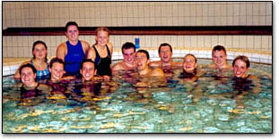

|
Startside
Treningstider
Aktiviteter
English
Resultater
Bilder
Styret
Medlemskap
Medlemmer
Treningsinfo
Treningstider
i Pirbadet
Man 2100 - 2230
Ons 2030 - 2200
Fre 2030 - 2200
Pirbadet
Svømmegruppa trener i Pirbadet. Les
mer om badet her .
Adresse:
NTNUI Svømmegruppa
Stud. Post
222
7491 Trondheim.
Epost:
REDACTED
Denne adressen blir kun brukt til mail som skal til
alle på mailinglista. Ved spørsmål og andre
henvendelser, kontakt heller noen av de nederst på denne
siden...
Skal du på eller av av mailinglisten, send en
mail til REDACTED
Har du spørsmål eller kommentarer til
styret, kan du sende en epost til
REDACTED
Dersom du har andre spørsmål kan du
henvende deg til leder ved å sende en epost til
REDACTED
Du kan også kontakte vår kasserer dersom
du har spørsmål angående medlemskontingent
eller lignende. I såfall er
REDACTED riktig epostadresse.
Har du bilder om du kunne tenke deg å legge ut på
svømmegruppas internettsider, send dem til
REDACTED
|
Velkommen til svømmegruppa

Kom
og svøm med oss!
Velkommen til Svømmegruppas internettsider. Her vil du
finne informasjon om NTNUIs svømmetilbud til medlemmene.
Nyheter
NTNUI-Sprinten
(09.02.07)
18
march we are holding a swim meet in Pirbadet.The meet is open too
all members of the swim group and we want to encourage you all to
take the challenge and participate.
To
those of you who don't want to swim, we also need people to help
us make the swim meet run smoothly. The meet starts at 11 and is
planned to end at 16.
Mori
info at Sprintens
homepage
Sign
up for swimming or arranging to REDACTED
Vakter
på Gløshaugen (09.02.07)
Vi
trenger frivillige til å sitte vakter på idrettsbygget
på Gløshaugen i perioden 11.3 til 13.3. Dette er tida
vi må brette opp ermene på dugnadsskjorta. Meld deg
som vakt på REDACTED
We
need YOU!
Generalforsamling
(09.02.07)
Svømmegruppa
holder generalforsamling på Peppes i Kjøpmannsgata
torsdag 15. februar klokken 19:00.
Møt opp, få Pizza
og gi ditt bidrag til et bedre treningsmiljø!
The annual general meeting
for the swim group will be held on Peppes in Kjøpmannsgata
Thursday 15. february. Bee there, get Pizza and give your
contribution to a bether training environment.
KLUBBKAMP (05.10.06)
Det
er herved bestemt at KLUBBKAMPEN vil avholdes den 28.okt. Dette er
for de ikke som ikke vet det, ingen blod-serriøs
konkurranse, men heller en mulighet til å bli kjent med folk
og fe i klubben, og noen flotte sjeler i Oslo. Alt om stevnet kan
leses her. PÅMELDINGER og andre
spørsmål henvendes til REDACTED
The
yeary Club-Meet is here. Join in som friendly competition, but
mostly socialactivites, with NTNUI and Oslo`s swimmers, OSI. To
sign up, or if you have any questions, send email to:
REDACTED.
Generelt (05.10.06)
Du
trenger ikke vente til navnet ditt kommer på lista med å
komme på trening, SÅ LENGE DU HAR BETALT OG SENDT MAIL
TIL KASSERER.
Du kan bare få chip på onsdag og
fredag, pga kassestengt. Du MÅ ha chip for å komme på
trening, og det er ditt eget ansvar å skaffe en.
You
do not have to wait until your name appears on the website to come
to practice, AS LONG AS YOU HAVE PAYD AND SENT EMAIL TO THE
ACCOUNTANT.
You will only be able to get your chip on
wednesday and friday because the the register is closed on monday.
You MUST have a chip to come to practice and it is your own
responsibility to get one.
Innmelding (06.09.06)
Hvordan melde seg inn i
svømmeklubben:
Betal penger
Send mail til kasserer med
navn, adresse, tlf, fødselsdato
Gå på trening
Navnet ditt dukker opp på lista, med tiden
How to join the swimteam
Pay money
Send mail to acountant w/name,
address, phone, birthdate
Go to practice
Your name will appear on the homepage, with time
Div (06.09.06)
Etter litt
rot tidlig i semesteret er vi tilbake til originale treningstider.
After some back and forth are we now back to original
training-times.
Klubbkamp
(06.09.06)
Klubbkamp mot OSI 22. oktober.
Club-meet
against OSI (Oslo swimmers) 22. october
Morro/Fun (06.09.06)
Veddugna til NicoKoien 22-24.
sep. En framifrå mulighet til å
Kom en, kom alle, koietur er masse moro, sjekk bildegalleriet
for bevis
Påmeldinger sendes til
REDACTED
Lumberjacking at the
Nico-cottage 22-24 sep. We cut wood for a day and
eat/drink the
rest. This is a good oportunity to
Come one come all, these trips are
loads of fun, check the gallery for
proof. For sign-up, send
mail to: REDACTED
General info nye folk/new folks
(25.08.06)
Du trenger ikke vente til navnet ditt dukker opp
på hjemmesiden med å gå på trening. Så
lenge du har betalt så kommer det snart, bare kom.
You
do not have to wait until your name appears on the website to come
to practice, just come when you have paid.
Første trening/First
practice (17.08.06)
Første trening dukker opp
førstkommende mandag kl 2000
Velkommen
First
practice will be this monday at 2000
Welcome
Instruktører
(14.08.06)
TS&LK søker instruktører til
svømmekurs
Sleng mail til REDACTED dersom du er
interessert
TS&LK is looking for instructors for a
swimming course
Email REDACTED if you are qualified and
eager.
Trening/Practice
(20.01.06)
Siste trening er fredag 9. juni
7. og 9.
starter trening kl 20:00.
pga solvinder og kosmisk
strahlung.
Last practice is friday the 9th
Practice on
the 7th and 9th will start at 20:00
for reasons og solar winds
and cosmic radiation.
Trøndersvøm
(20.01.06)
Trøndersvøm, 3-5
februar.
Påmelding innen 19. januar til REDACTED
mail: REDACTED
Koietur (20.01.06)
Koietur
10-12 februar. Destinasjon Heinsfjorden.
Påmelding innen
6. februar til REDACTED
mail:
REDACTED
Gamle nyheter...
|